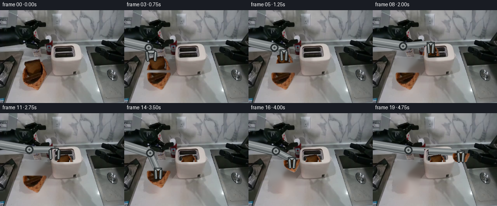
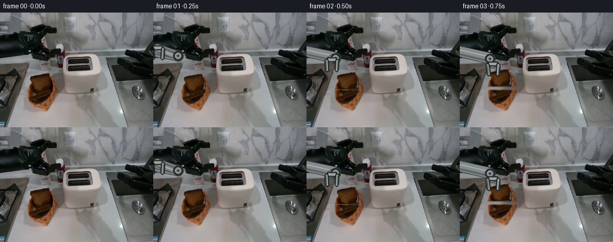
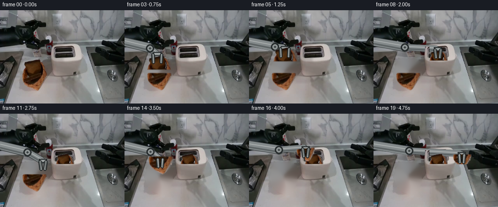

CODING AGENTS AS PIXEL WORLD MODELS
traex/DeepSeek-V4.1-Flash · common50_0001
点击播放 · 原生 RGB 像素
逐轮保存的候选
回放视频、检查图与代码变化。
每份候选均可单独播放。实际图片检查记录在下方工具轨迹中。
候选 01播放与检查图
点击播放 · 原生 RGB 像素


展开代码变化
--- 上一保存版本
+++ 本次保存版本
@@ -0,0 +1,387 @@
+from pathlib import Path
+
+import cv2
+import numpy as np
+from PIL import Image
+
+import artifact_io
+
+
+ROOT = Path(__file__).resolve().parent
+W, H, N = 256, 192, 20
+
+
+def smoothstep(t):
+ t = np.clip(t, 0.0, 1.0)
+ return t * t * (3.0 - 2.0 * t)
+
+
+def lerp(a, b, t):
+ return tuple(float(x + (y - x) * t) for x, y in zip(a, b))
+
+
+def keyed(points, frame):
+ """Interpolate a keyed sequence of (frame, value) pairs."""
+ if frame <= points[0][0]:
+ return points[0][1]
+ if frame >= points[-1][0]:
+ return points[-1][1]
+ for (f0, v0), (f1, v1) in zip(points, points[1:]):
+ if f0 <= frame <= f1:
+ t = smoothstep((frame - f0) / float(f1 - f0))
+ if isinstance(v0, tuple):
+ return lerp(v0, v1, t)
+ return float(v0 + (v1 - v0) * t)
+ return points[-1][1]
+
+
+def polygon_alpha(points, blur=0.6):
+ mask = np.zeros((H, W), np.uint8)
+ cv2.fillPoly(mask, [np.asarray(points, np.int32)], 255, cv2.LINE_AA)
+ if blur:
+ mask = cv2.GaussianBlur(mask, (0, 0), blur)
+ return mask.astype(np.float32) / 255.0
+
+
+def composite(base, color, alpha):
+ a = np.clip(alpha, 0.0, 1.0)[..., None]
+ return np.clip(
+ base.astype(np.float32) * (1.0 - a) + color.astype(np.float32) * a,
+ 0,
+ 255,
+ ).astype(np.uint8)
+
+
+def warp_sprite(frame, alpha, source_center, target_center, angle, scale):
+ sx, sy = source_center
+ tx, ty = target_center
+ matrix = cv2.getRotationMatrix2D((sx, sy), angle, scale)
+ matrix[0, 2] += tx - sx
+ matrix[1, 2] += ty - sy
+ warped = cv2.warpAffine(
+ frame,
+ matrix,
+ (W, H),
+ flags=cv2.INTER_LINEAR,
+ borderMode=cv2.BORDER_REFLECT_101,
+ )
+ warped_alpha = cv2.warpAffine(
+ alpha,
+ matrix,
+ (W, H),
+ flags=cv2.INTER_LINEAR,
+ borderMode=cv2.BORDER_CONSTANT,
+ borderValue=0,
+ )
+ return warped, warped_alpha
+
+
+def draw_metal_segment(frame, p0, p1, radius, dark=False):
+ p0 = np.asarray(p0, np.float32)
+ p1 = np.asarray(p1, np.float32)
+ direction = p1 - p0
+ length = float(np.hypot(direction[0], direction[1]))
+ if length < 0.25:
+ return
+ tangent = direction / length
+ normal = np.array([-tangent[1], tangent[0]], np.float32)
+
+ outline = (30, 35, 36) if dark else (48, 53, 54)
+ body = (81, 88, 89) if dark else (132, 138, 139)
+ highlight = (113, 120, 120) if dark else (179, 183, 182)
+ shadow = (49, 55, 56) if dark else (93, 99, 100)
+
+ poly = np.array(
+ [
+ p0 + normal * (radius + 1.1),
+ p1 + normal * (radius + 0.8),
+ p1 - normal * (radius + 0.8),
+ p0 - normal * (radius + 1.1),
+ ],
+ np.int32,
+ )
+ cv2.fillConvexPoly(frame, poly, outline, cv2.LINE_AA)
+ cv2.circle(frame, tuple(np.round(p0).astype(int)), int(radius + 1), outline, -1, cv2.LINE_AA)
+ cv2.circle(frame, tuple(np.round(p1).astype(int)), int(radius + 1), outline, -1, cv2.LINE_AA)
+
+ poly = np.array(
+ [
+ p0 + normal * radius,
+ p1 + normal * radius,
+ p1 - normal * radius,
+ p0 - normal * radius,
+ ],
+ np.int32,
+ )
+ cv2.fillConvexPoly(frame, poly, body, cv2.LINE_AA)
+ cv2.circle(frame, tuple(np.round(p0).astype(int)), int(radius), body, -1, cv2.LINE_AA)
+ cv2.circle(frame, tuple(np.round(p1).astype(int)), int(radius), body, -1, cv2.LINE_AA)
+
+ h0 = p0 - normal * radius * 0.38
+ h1 = p1 - normal * radius * 0.38
+ s0 = p0 + normal * radius * 0.52
+ s1 = p1 + normal * radius * 0.52
+ cv2.line(frame, tuple(np.round(h0).astype(int)), tuple(np.round(h1).astype(int)), highlight, 1, cv2.LINE_AA)
+ cv2.line(frame, tuple(np.round(s0).astype(int)), tuple(np.round(s1).astype(int)), shadow, 2, cv2.LINE_AA)
+
+
+def draw_arm_back(frame, grip):
+ gx, gy = grip
+ shoulder = (-10.0, 63.0)
+ elbow = (49.0 + (gx - 49.0) * 0.18, 73.0 + (gy - 73.0) * 0.18)
+ wrist = (gx - 1.5, gy - 8.5)
+
+ draw_metal_segment(frame, shoulder, elbow, 8.0)
+ draw_metal_segment(frame, elbow, wrist, 5.6)
+
+ cv2.circle(frame, tuple(np.round(elbow).astype(int)), 8, (36, 41, 42), -1, cv2.LINE_AA)
+ cv2.circle(frame, tuple(np.round(elbow).astype(int)), 5, (143, 149, 149), -1, cv2.LINE_AA)
+ cv2.circle(frame, tuple(np.round(elbow).astype(int)), 2, (59, 65, 66), -1, cv2.LINE_AA)
+
+ palm = np.array(
+ [
+ [gx - 8, gy - 12],
+ [gx + 8, gy - 12],
+ [gx + 7, gy - 5],
+ [gx - 7, gy - 5],
+ ],
+ np.int32,
+ )
+ cv2.fillConvexPoly(frame, palm, (37, 42, 43), cv2.LINE_AA)
+ inner = np.array(
+ [
+ [gx - 6, gy - 10],
+ [gx + 6, gy - 10],
+ [gx + 5, gy - 7],
+ [gx - 5, gy - 7],
+ ],
+ np.int32,
+ )
+ cv2.fillConvexPoly(frame, inner, (159, 164, 163), cv2.LINE_AA)
+ return frame
+
+
+def draw_fingers_front(frame, grip, closed):
+ gx, gy = grip
+ spread = 5.5 if closed else 9.0
+ for sign in (-1, 1):
+ x0 = gx + sign * spread
+ x1 = gx + sign * (spread - 1.2)
+ top = (x0, gy - 7.0)
+ tip = (x1, gy + 9.0)
+ cv2.line(
+ frame,
+ tuple(np.round(top).astype(int)),
+ tuple(np.round(tip).astype(int)),
+ (29, 34, 35),
+ 5,
+ cv2.LINE_AA,
+ )
+ cv2.line(
+ frame,
+ tuple(np.round(top).astype(int)),
+ tuple(np.round(tip).astype(int)),
+ (163, 168, 166),
+ 2,
+ cv2.LINE_AA,
+ )
+ cv2.line(
+ frame,
+ (int(round(top[0] + sign)), int(round(top[1]))),
+ (int(round(tip[0] + sign)), int(round(tip[1]))),
+ (73, 79, 79),
+ 1,
+ cv2.LINE_AA,
+ )
+ return frame
+
+
+def build_assets():
+ frame0 = np.asarray(Image.open(ROOT / "first_frame.png").convert("RGB"), dtype=np.uint8)
+
+ upper_points = [
+ [63, 101], [76, 100], [89, 103], [95, 110], [96, 131],
+ [44, 131], [45, 113], [51, 105],
+ ]
+ lower_points = [
+ [44, 129], [96, 129], [95, 143], [89, 154], [82, 161],
+ [75, 165], [65, 160], [55, 153], [48, 144],
+ ]
+ upper_alpha = polygon_alpha(upper_points, 0.55)
+ lower_alpha = polygon_alpha(lower_points, 0.55)
+
+ # Make the extraction follow the actual crust boundary while retaining the
+ # original bread shading and crumb texture.
+ hsv = cv2.cvtColor(frame0, cv2.COLOR_RGB2HSV)
+ hue = hsv[..., 0].astype(np.float32)
+ sat = hsv[..., 1].astype(np.float32)
+ val = hsv[..., 2].astype(np.float32)
+ bread_color = ((hue >= 4.0) & (hue <= 34.0) & (sat > 45.0) & (val > 18.0)).astype(np.float32)
+ bread_color = cv2.GaussianBlur(bread_color, (0, 0), 0.55)
+ upper_alpha *= np.clip(bread_color * 1.35 + 0.08, 0.0, 1.0)
+ lower_alpha *= np.clip(bread_color * 1.35 + 0.08, 0.0, 1.0)
+
+ remove = np.zeros((H, W), np.uint8)
+ cv2.fillPoly(remove, [np.asarray(upper_points, np.int32)], 255)
+ cv2.fillPoly(remove, [np.asarray(lower_points, np.int32)], 255)
+ remove = cv2.dilate(remove, np.ones((5, 5), np.uint8), iterations=1)
+ clean = cv2.inpaint(frame0, remove, 6, cv2.INPAINT_TELEA)
+
+ # Low-frequency blending hides the inpainting streaks inside the woven basket.
+ soft = cv2.GaussianBlur(clean, (0, 0), 4.0)
+ near = cv2.GaussianBlur(remove.astype(np.float32) / 255.0, (0, 0), 2.2)[..., None]
+ clean = np.clip(
+ clean.astype(np.float32) * (1.0 - 0.55 * near)
+ + soft.astype(np.float32) * (0.55 * near),
+ 0,
+ 255,
+ ).astype(np.uint8)
+
+ # The white front of the toaster occludes bread after insertion. Keeping the
+ # mask just below the top lip makes the bread visibly enter the slot.
+ front_occluder = np.zeros((H, W), np.uint8)
+ cv2.rectangle(front_occluder, (105, 101), (214, 191), 255, -1)
+ cv2.rectangle(front_occluder, (106, 74), (114, 101), 255, -1)
+ cv2.rectangle(front_occluder, (204, 74), (214, 101), 255, -1)
+ front_occluder = cv2.GaussianBlur(front_occluder, (0, 0), 0.35).astype(np.float32) / 255.0
+
+ return (
+ frame0,
+ clean,
+ (frame0, upper_alpha),
+ (frame0, lower_alpha),
+ front_occluder,
+ )
+
+
+UPPER_CENTER = (70.0, 116.5)
+LOWER_CENTER = (70.0, 146.0)
+LEFT_SLOT = (132.0, 95.0)
+RIGHT_SLOT = (181.0, 95.0)
+
+
+def upper_pose(frame):
+ # Pick, lift, carry, and lower the first slice into the left slot.
+ if frame <= 1:
+ return keyed([(1, UPPER_CENTER), (4, (69.0, 106.0))], frame), 0.0, 0.97
+ if frame <= 4:
+ return keyed([(1, UPPER_CENTER), (4, (69.0, 106.0))], frame), 0.0, 0.97
+ if frame <= 9:
+ return (
+ keyed(
+ [
+ (4, (69.0, 106.0)),
+ (6, (76.0, 91.0)),
+ (8, (119.0, 83.0)),
+ (9, LEFT_SLOT),
+ ],
+ frame,
+ ),
+ keyed([(4, 0.0), (6, 6.0), (8, -3.0), (9, 0.0)], frame),
+ 0.70,
+ )
+ return LEFT_SLOT, 0.0, 0.70
+
+
+def lower_pose(frame):
+ # The second slice stays seated until the arm returns for it.
+ if frame <= 13:
+ return LOWER_CENTER, 0.0, 0.97
+ if frame <= 15:
+ return keyed([(13, LOWER_CENTER), (15, (69.0, 126.0))], frame), 0.0, 0.97
+ if frame <= 19:
+ return (
+ keyed(
+ [
+ (15, (69.0, 126.0)),
+ (17, (109.0, 91.0)),
+ (18, (153.0, 84.0)),
+ (19, RIGHT_SLOT),
+ ],
+ frame,
+ ),
+ keyed([(15, 0.0), (17, 6.0), (18, -3.0), (19, 0.0)], frame),
+ 0.70,
+ )
+ return RIGHT_SLOT, 0.0, 0.70
+
+
+def grip_pose(frame):
+ if frame == 0:
+ return (-7.0, 64.0), False
+ if frame <= 4:
+ return keyed([(1, (7.0, 67.0)), (2, (42.0, 87.0)), (4, (69.0, 101.0))], frame), False
+ if frame <= 9:
+ return keyed(
+ [
+ (4, (69.0, 101.0)),
+ (6, (76.0, 86.0)),
+ (8, (119.0, 78.0)),
+ (9, (132.0, 90.0)),
+ ],
+ frame,
+ ), True
+ if frame <= 13:
+ return keyed(
+ [
+ (9, (132.0, 90.0)),
+ (11, (112.0, 84.0)),
+ (13, (70.0, 130.0)),
+ ],
+ frame,
+ ), False
+ if frame <= 15:
+ return keyed([(13, (70.0, 130.0)), (15, (69.0, 121.0))], frame), True
+ if frame <= 19:
+ return keyed(
+ [
+ (15, (69.0, 121.0)),
+ (17, (109.0, 86.0)),
+ (18, (153.0, 79.0)),
+ (19, (181.0, 90.0)),
+ ],
+ frame,
+ ), True
+ return (181.0, 90.0), True
+
+
+def main():
+ frame0, clean, upper, lower, occluder = build_assets()
+ frames = []
+
+ for index in range(N):
+ if index == 0:
+ frames.append(frame0.copy())
+ continue
+
+ base = clean.copy()
+ grip, closed = grip_pose(index)
+ base = draw_arm_back(base, grip)
+
+ # Upper slice is behind the front slice while still in the basket.
+ for sprite, source_center, pose_fn in (
+ (upper, UPPER_CENTER, upper_pose),
+ (lower, LOWER_CENTER, lower_pose),
+ ):
+ center, angle, scale = pose_fn(index)
+ warped, alpha = warp_sprite(
+ sprite[0],
+ sprite[1],
+ source_center,
+ center,
+ angle,
+ scale,
+ )
+ base = composite(base, warped, alpha)
+
+ base = composite(base, frame0, occluder)
+ base = draw_fingers_front(base, grip, closed)
+ frames.append(base)
+
+ frames = np.stack(frames, axis=0).astype(np.uint8)
+ artifact_io.save(frames, ROOT)
+ return frames
+
+
+if __name__ == "__main__":
+ main()
候选 02播放与检查图
点击播放 · 原生 RGB 像素

展开代码变化
--- 上一保存版本
+++ 本次保存版本
@@ -200,11 +200,11 @@
frame0 = np.asarray(Image.open(ROOT / "first_frame.png").convert("RGB"), dtype=np.uint8)
upper_points = [
- [63, 101], [76, 100], [89, 103], [95, 110], [96, 131],
- [44, 131], [45, 113], [51, 105],
+ [63, 101], [77, 100], [89, 103], [95, 109], [97, 130],
+ [44, 130], [45, 113], [51, 105],
]
lower_points = [
- [44, 129], [96, 129], [95, 143], [89, 154], [82, 161],
+ [44, 129], [97, 129], [96, 142], [90, 152], [83, 160],
[75, 165], [65, 160], [55, 153], [48, 144],
]
upper_alpha = polygon_alpha(upper_points, 0.55)
@@ -216,10 +216,10 @@
hue = hsv[..., 0].astype(np.float32)
sat = hsv[..., 1].astype(np.float32)
val = hsv[..., 2].astype(np.float32)
- bread_color = ((hue >= 4.0) & (hue <= 34.0) & (sat > 45.0) & (val > 18.0)).astype(np.float32)
- bread_color = cv2.GaussianBlur(bread_color, (0, 0), 0.55)
- upper_alpha *= np.clip(bread_color * 1.35 + 0.08, 0.0, 1.0)
- lower_alpha *= np.clip(bread_color * 1.35 + 0.08, 0.0, 1.0)
+ bread_color = ((hue >= 3.0) & (hue <= 36.0) & (sat > 35.0) & (val > 14.0)).astype(np.float32)
+ bread_color = cv2.GaussianBlur(bread_color, (0, 0), 0.45)
+ upper_alpha *= np.clip(bread_color * 1.55 + 0.18, 0.0, 1.0)
+ lower_alpha *= np.clip(bread_color * 1.55 + 0.18, 0.0, 1.0)
remove = np.zeros((H, W), np.uint8)
cv2.fillPoly(remove, [np.asarray(upper_points, np.int32)], 255)
@@ -240,9 +240,9 @@
# The white front of the toaster occludes bread after insertion. Keeping the
# mask just below the top lip makes the bread visibly enter the slot.
front_occluder = np.zeros((H, W), np.uint8)
- cv2.rectangle(front_occluder, (105, 101), (214, 191), 255, -1)
- cv2.rectangle(front_occluder, (106, 74), (114, 101), 255, -1)
- cv2.rectangle(front_occluder, (204, 74), (214, 101), 255, -1)
+ cv2.rectangle(front_occluder, (105, 104), (214, 191), 255, -1)
+ cv2.rectangle(front_occluder, (106, 75), (114, 104), 255, -1)
+ cv2.rectangle(front_occluder, (204, 75), (214, 104), 255, -1)
front_occluder = cv2.GaussianBlur(front_occluder, (0, 0), 0.35).astype(np.float32) / 255.0
return (
@@ -256,93 +256,95 @@
UPPER_CENTER = (70.0, 116.5)
LOWER_CENTER = (70.0, 146.0)
-LEFT_SLOT = (132.0, 95.0)
-RIGHT_SLOT = (181.0, 95.0)
+LEFT_SLOT = (132.0, 93.0)
+RIGHT_SLOT = (181.0, 96.0)
def upper_pose(frame):
# Pick, lift, carry, and lower the first slice into the left slot.
- if frame <= 1:
- return keyed([(1, UPPER_CENTER), (4, (69.0, 106.0))], frame), 0.0, 0.97
- if frame <= 4:
- return keyed([(1, UPPER_CENTER), (4, (69.0, 106.0))], frame), 0.0, 0.97
- if frame <= 9:
+ if frame <= 5:
+ return keyed([(1, UPPER_CENTER), (3, (69.5, 108.0)), (5, (73.0, 91.0))], frame), 0.0, 0.97
+ if frame <= 8:
return (
keyed(
[
- (4, (69.0, 106.0)),
- (6, (76.0, 91.0)),
- (8, (119.0, 83.0)),
- (9, LEFT_SLOT),
+ (5, (73.0, 91.0)),
+ (7, (105.0, 82.0)),
+ (8, LEFT_SLOT),
],
frame,
),
- keyed([(4, 0.0), (6, 6.0), (8, -3.0), (9, 0.0)], frame),
- 0.70,
- )
- return LEFT_SLOT, 0.0, 0.70
+ keyed([(5, 0.0), (7, 5.0), (8, 0.0)], frame),
+ 0.72,
+ )
+ return LEFT_SLOT, 0.0, 0.72
def lower_pose(frame):
# The second slice stays seated until the arm returns for it.
- if frame <= 13:
+ if frame <= 10:
return LOWER_CENTER, 0.0, 0.97
- if frame <= 15:
- return keyed([(13, LOWER_CENTER), (15, (69.0, 126.0))], frame), 0.0, 0.97
+ if frame <= 14:
+ return keyed([(10, LOWER_CENTER), (12, (69.0, 137.0)), (14, (73.0, 105.0))], frame), 0.0, 0.97
if frame <= 19:
return (
keyed(
[
- (15, (69.0, 126.0)),
- (17, (109.0, 91.0)),
- (18, (153.0, 84.0)),
+ (14, (73.0, 105.0)),
+ (16, (116.0, 84.0)),
+ (18, (159.0, 84.0)),
(19, RIGHT_SLOT),
],
frame,
),
- keyed([(15, 0.0), (17, 6.0), (18, -3.0), (19, 0.0)], frame),
- 0.70,
- )
- return RIGHT_SLOT, 0.0, 0.70
+ keyed([(14, 0.0), (16, 6.0), (18, -3.0), (19, 0.0)], frame),
+ 0.72,
+ )
+ return RIGHT_SLOT, 0.0, 0.72
def grip_pose(frame):
if frame == 0:
return (-7.0, 64.0), False
- if frame <= 4:
- return keyed([(1, (7.0, 67.0)), (2, (42.0, 87.0)), (4, (69.0, 101.0))], frame), False
- if frame <= 9:
+ if frame <= 5:
+ return keyed([(1, (7.0, 67.0)), (2, (41.0, 82.0)), (3, (67.0, 98.0)), (5, (73.0, 86.0))], frame), False
+ if frame <= 8:
return keyed(
[
- (4, (69.0, 101.0)),
- (6, (76.0, 86.0)),
- (8, (119.0, 78.0)),
- (9, (132.0, 90.0)),
+ (5, (73.0, 86.0)),
+ (7, (105.0, 77.0)),
+ (8, (132.0, 88.0)),
],
frame,
), True
- if frame <= 13:
+ if frame <= 10:
return keyed(
[
- (9, (132.0, 90.0)),
- (11, (112.0, 84.0)),
- (13, (70.0, 130.0)),
+ (8, (132.0, 88.0)),
+ (10, (107.0, 81.0)),
],
frame,
), False
- if frame <= 15:
- return keyed([(13, (70.0, 130.0)), (15, (69.0, 121.0))], frame), True
+ if frame <= 14:
+ return keyed(
+ [
+ (10, (107.0, 81.0)),
+ (12, (69.0, 129.0)),
+ (14, (73.0, 100.0)),
+ ],
+ frame,
+ ), True
if frame <= 19:
return keyed(
[
- (15, (69.0, 121.0)),
- (17, (109.0, 86.0)),
- (18, (153.0, 79.0)),
- (19, (181.0, 90.0)),
+ (14, (73.0, 100.0)),
+ (16, (116.0, 79.0)),
+ (18, (159.0, 79.0)),
+ (19, (181.0, 91.0)),
],
frame,
), True
- return (181.0, 90.0), True
+ return (181.0, 91.0), True
def main():
候选 03播放与检查图
点击播放 · 原生 RGB 像素

展开代码变化
--- 上一保存版本
+++ 本次保存版本
@@ -43,6 +43,13 @@
return mask.astype(np.float32) / 255.0
+def ellipse_alpha(center, axes, angle=0.0, blur=1.0):
+ mask = np.zeros((H, W), np.uint8)
+ cv2.ellipse(mask, center, axes, angle, 0, 360, 255, cv2.LINE_AA)
+ mask = cv2.GaussianBlur(mask, (0, 0), blur)
+ return mask.astype(np.float32) / 255.0
+
+
def composite(base, color, alpha):
a = np.clip(alpha, 0.0, 1.0)[..., None]
return np.clip(
@@ -220,6 +227,8 @@
bread_color = cv2.GaussianBlur(bread_color, (0, 0), 0.45)
upper_alpha *= np.clip(bread_color * 1.55 + 0.18, 0.0, 1.0)
lower_alpha *= np.clip(bread_color * 1.55 + 0.18, 0.0, 1.0)
+ upper_alpha = cv2.GaussianBlur(upper_alpha, (0, 0), 0.42)
+ lower_alpha = cv2.GaussianBlur(lower_alpha, (0, 0), 0.42)
remove = np.zeros((H, W), np.uint8)
cv2.fillPoly(remove, [np.asarray(upper_points, np.int32)], 255)
@@ -361,11 +370,18 @@
base = draw_arm_back(base, grip)
# Upper slice is behind the front slice while still in the basket.
- for sprite, source_center, pose_fn in (
- (upper, UPPER_CENTER, upper_pose),
- (lower, LOWER_CENTER, lower_pose),
- ):
- center, angle, scale = pose_fn(index)
+ poses = ((upper, UPPER_CENTER, upper_pose(index)), (lower, LOWER_CENTER, lower_pose(index)))
+ for sprite, source_center, (center, angle, scale) in poses:
+ # Soft contact shadow follows the held slice and gives the lift depth.
+ shadow_alpha = ellipse_alpha(
+ (int(round(center[0] + 2)), int(round(center[1] + 14))),
+ (22, 6),
+ angle * 0.4,
+ 2.5,
+ ) * 0.22
+ shadow_color = np.zeros_like(base)
+ base = composite(base, shadow_color, shadow_alpha)
+
warped, alpha = warp_sprite(
sprite[0],
sprite[1],
候选 04播放与检查图
可观测工具轨迹
实际执行的命令与返回图片。
命令 1exit 0
/bin/bash -c "pwd && rg --files -g '"'!*.mp4'"' -g '"'!*.mov'"' | sort"
命令 2exit 0
/bin/bash -c "sed -n '1,240p' prompt.txt"
命令 3exit 0
/bin/bash -c "sed -n '1,280p' GENERATION_RULES.md"
命令 4exit 0
/bin/bash -c "find . -maxdepth 2 -type f -printf '%p %s bytes\\n' | sort"
命令 5exit 0
/bin/bash -c 'cat task_spec.json'
命令 6exit 0
/bin/bash -c "sed -n '1,260p' artifact_io.py"
命令 7exit 0
/bin/bash -c "sed -n '1,240p' player_template.html"
命令 8exit 0
/bin/bash -c "python - <<'PY'
from PIL import Image
import numpy as np
im=np.asarray(Image.open('first_frame.png').convert('RGB'))
print(im.shape, im.dtype, im.min(), im.max(), im.mean(axis=(0,1)))
for y in range(0,192,16):
print(y, [tuple(im[y,x]) for x in range(0,256,32)])
PY"命令 9exit 0
/bin/bash -c "python - <<'PY'
from PIL import Image
import numpy as np
im=np.asarray(Image.open('first_frame.png').convert('RGB')).astype(float)
g=im.mean(2)
# sobel
gx=np.zeros_like(g); gy=np.zeros_like(g)
gx[:,1:-1]=g[:,2:]-g[:,:-2]; gy[1:-1]=g[2:]-g[:-2]
e=np.hypot(gx,gy)
# average/max edges in 4x4 blocks, output 64x48
h,w=g.shape
for by in range(0,h,4):
line=''
for bx in range(0,w,4):
v=np.percentile(e[by:by+4,bx:bx+4],80)
line += ' ' if v<12 else '.' if v<30 else ':' if v<60 else '*' if v<100 else '#'
print(line.rstrip())
PY"命令 10exit 0
/bin/bash -c "python - <<'PY'
from PIL import Image
import numpy as np
im=np.asarray(Image.open('first_frame.png').convert('RGB'))
q=Image.fromarray(im).quantize(colors=16, method=Image.Quantize.MEDIANCUT)
pal=np.array(q.getpalette()).reshape(-1,3)[:16]
a=np.asarray(q)
for i,c in enumerate(pal):
ys,xs=np.where(a==i)
print(f'{i:2d} rgb={tuple(c)} n={len(xs):5d} bbox=({xs.min()},{ys.min()})-({xs.max()},{ys.max()}) meanxy=({xs.mean():.0f},{ys.mean():.0f})')
print('--- 2px sampled palette map (x step 4 y step 4), hex chars ---')
chars='0123456789ABCDEF'
for y in range(0,192,4):
print(''.join(chars[a[y,x]] for x in range(0,256,4)))
PY"命令 11exit 0
/bin/bash -c "python - <<'PY'
from PIL import Image
import numpy as np
im=np.asarray(Image.open('first_frame.png').convert('RGB')).astype(float)
# gamma luminance, average 2x2, map 256x192 to 128x96, chars
l=0.2126*im[:,:,0]+0.7152*im[:,:,1]+0.0722*im[:,:,2]
l=l.reshape(96,2,128,2).mean((1,3))
chars=' .,:;irsXA253hMHGS#9B&@'
for row in l:
print(''.join(chars[min(len(chars)-1,int(v/256*len(chars)))] for v in row))
PY"命令 12exit 0
/bin/bash -c "python - <<'PY'
try:
import cv2; print('cv2',cv2.__version__)
except Exception as e: print('no cv2',e)
try:
import scipy; print('scipy',scipy.__version__)
except Exception as e: print('no scipy',e)
try:
import skimage; print('skimage',skimage.__version__)
except Exception as e: print('no skimage',e)
PY"命令 13exit 127
/bin/bash -c "file first_frame.png && python - <<'PY'
from PIL import Image
im=Image.open('first_frame.png'); print(im.info, im.mode, im.size)
PY"命令 14exit 0
/bin/bash -c "python - <<'PY'
from PIL import Image
import numpy as np, cv2
im=np.asarray(Image.open('first_frame.png').convert('RGB'))
hsv=cv2.cvtColor(im, cv2.COLOR_RGB2HSV)
H,S,V=[hsv[:,:,i] for i in range(3)]
# summarize saturation
print('S percentiles',np.percentile(S,[50,75,90,95,97,99]))
print('Hue histogram saturated S>70')
h=H[S>70]
for lo in range(0,180,10):
n=((h>=lo)&(h<lo+10)).sum()
if n: print(lo,lo+10,n)
# connected comps for brown/orange masks (h 5-35, S>45, V<180) etc
for name,m in [
('brown',(H>=5)&(H<=35)&(S>45)&(V>30)),
('orange',(H>=5)&(H<=25)&(S>80)&(V>40)),
('darkbrown',(H>=5)&(H<=35)&(S>30)&(V<130)),
('white',(S<25)&(V>160)),
('bright',(S<40)&(V>180)),
]:
m=m.astype('uint8')
n,lab,stats,cent=cv2.connectedComponentsWithStats(m,8)
comps=sorted([(stats[i,4],stats[i,0],stats[i,1],stats[i,2],stats[i,3],i) for i in range(1,n)],reverse=True)[:12]
print('\\n',name,'total',m.sum())
for area,x,y,w,hh,i in comps:
print(' ',area,(x,y,w,hh),'cent',tuple(np.round(cent[i],1)))
PY"命令 15exit 0
/bin/bash -c "python - <<'PY'
from PIL import Image
import numpy as np, cv2
im=np.asarray(Image.open('first_frame.png').convert('RGB'))
hsv=cv2.cvtColor(im,cv2.COLOR_RGB2HSV)
H,S,V=[hsv[:,:,i].astype(float) for i in range(3)]
# categories based on HSV
cats=np.full(H.shape,' ',dtype='<U1')
# neutral by brightness
neutral=(S<45)
cats[neutral & (V<35)]=' '
cats[neutral & (V>=35)&(V<70)]='.'
cats[neutral & (V>=70)&(V<105)]=':'
cats[neutral & (V>=105)&(V<140)]='+'
cats[neutral & (V>=140)&(V<180)]='o'
cats[neutral & (V>=180)]='O'
# chromatic
chrom=~neutral
cats[chrom&(H>=5)&(H<25)&(V<150)]='b'
cats[chrom&(H>=5)&(H<25)&(V>=150)]='B'
cats[chrom&(H>=25)&(H<45)]='y'
cats[chrom&(H>=45)&(H<90)]='g'
cats[chrom&(H>=90)&(H<130)]='c'
cats[chrom&(H>=130)&(H<160)]='u'
cats[chrom&((H<5)|(H>=160))]='r'
# display 2x2 blocks, char nearest center sample
for y in range(0,192,2):
print(''.join(cats[y,x] for x in range(0,256,2)))
PY"命令 16exit 0
/bin/bash -c "python - <<'PY'
from PIL import Image
import numpy as np, cv2
im=np.asarray(Image.open('first_frame.png').convert('RGB'))
# print exact-ish grayscale chars for crops, 2x2 averaging
chars=' .:-=+*#%@'
def show(x0,y0,x1,y1,step=2):
l=0.299*im[:,:,0]+0.587*im[:,:,1]+0.114*im[:,:,2]
print(f'crop {x0,y0,x1,y1}')
for y in range(y0,y1,step):
row=''
for x in range(x0,x1,step):
b=l[y:min(y+step,y1),x:min(x+step,x1)]
v=b.mean()
row += chars[min(9,int(v/256*10))]
print(row)
print('FULL'); show(0,0,256,192,4)
print('\\nLEFT'); show(0,60,130,192,2)
print('\\nRIGHT'); show(100,50,230,192,2)
PY"命令 17exit 0
/bin/bash -c "python - <<'PY'
from PIL import Image
import numpy as np, cv2
im=np.asarray(Image.open('first_frame.png').convert('RGB'))
# kmeans on every 2nd px, 24 clusters
px=im[::2,::2].reshape(-1,3).astype(np.float32)
crit=(cv2.TERM_CRITERIA_EPS+cv2.TERM_CRITERIA_MAX_ITER,100,.2)
_,labels,cent=cv2.kmeans(px,24,None,crit,10,cv2.KMEANS_PP_CENTERS)
full=im.reshape(-1,3).astype(np.float32)
# classify all pixels
lab=np.empty(len(full),np.int32)
for s in range(0,len(full),20000):
d=((full[s:s+20000,None,:]-cent[None,:,:])**2).sum(2)
lab[s:s+20000]=d.argmin(1)
lab=lab.reshape(192,256)
order=sorted(range(24),key=lambda i:(cent[i,0]-cent[i,1],cent[i,1],cent[i,2]))
chars='0123456789ABCDEFGHIJKLMN'
print('clusters sorted by R-G then G,B:')
for rank,i in enumerate(order):
ys,xs=np.where(lab==i)
print(chars[rank],i,tuple(np.round(cent[i]).astype(int)),len(xs), (xs.min(),ys.min(),xs.max(),ys.max()) if len(xs) else '')
print('\\nMAP crop x0-220 y50-192 step2, cluster chars')
for y in range(50,192,2):
print(f'{y:03d} '+''.join(chars[order.index(lab[y,x])] for x in range(0,220,2)))
PY"命令 18exit 0
/bin/bash -c "python - <<'PY'
from PIL import Image
import numpy as np, cv2
im=np.asarray(Image.open('first_frame.png').convert('RGB'))
hsv=cv2.cvtColor(im,cv2.COLOR_RGB2HSV)
H,S,V=[hsv[:,:,i].astype(float) for i in range(3)]
# chars by color family and brightness
cats=np.full(H.shape,' ',dtype='<U1')
neutral=S<55
# 10 neutral levels
for lo,ch in zip([0,25,50,75,100,125,150,175,200,225],' .:-=+*#%@'): pass
for y in range(192):
for x in range(256):
if neutral[y,x]:
v=V[y,x]
cats[y,x]=' .:-=+*#%@'[min(9,int(v/25.6))]
else:
h=H[y,x]; v=V[y,x]
if h<5 or h>=165: cats[y,x]='r'
elif h<18: cats[y,x]='R' if v>120 else 'r'
elif h<35: cats[y,x]='b' if v>120 else 'B'
elif h<50: cats[y,x]='y'
elif h<90: cats[y,x]='g'
elif h<135: cats[y,x]='c'
else: cats[y,x]='u'
print('BASKET x30..115 y65..175, pixel-level')
for y in range(65,175):
print(f'{y:03d} '+''.join(cats[y,x] for x in range(30,116)))
PY"命令 19exit 0
/bin/bash -c "python - <<'PY'
from PIL import Image
import numpy as np, cv2
im=np.asarray(Image.open('first_frame.png').convert('RGB'))
hsv=cv2.cvtColor(im,cv2.COLOR_RGB2HSV)
H,S,V=[hsv[:,:,i].astype(float) for i in range(3)]
# print detailed crop x90..210 y55..165, use categories color+brightness
chars=np.full(H.shape,' ',dtype='<U1')
for y in range(192):
for x in range(256):
s=S[y,x]; v=V[y,x]; h=H[y,x]
if s<40: chars[y,x]=' .:-=+*#%@'[min(9,int(v/25.6))]
elif h<5 or h>=165: chars[y,x]='r' if v<140 else 'R'
elif h<20: chars[y,x]='o' if v<140 else 'O'
elif h<40: chars[y,x]='b' if v<140 else 'B'
elif h<80: chars[y,x]='g'
elif h<130: chars[y,x]='c'
else: chars[y,x]='u'
for y in range(55,166):
print(f'{y:03d} '+''.join(chars[y,x] for x in range(90,211)))
PY"命令 20exit 0
/bin/bash -c "python - <<'PY'
from PIL import Image
import numpy as np
im=np.asarray(Image.open('first_frame.png').convert('RGB'))
chars=' .:-=+*#%@'
l=(0.299*im[:,:,0]+0.587*im[:,:,1]+0.114*im[:,:,2])
# exact crops at 1x
def show(x0,y0,x1,y1):
print('x',x0,x1,'y',y0,y1)
for y in range(y0,y1):
print(f'{y:03d} '+''.join(chars[min(9,int(l[y,x]/25.6))] for x in range(x0,x1)))
show(35,100,115,170)
PY"命令 21exit 0
/bin/bash -c "python - <<'PY'
from PIL import Image
import numpy as np, cv2
im=np.asarray(Image.open('first_frame.png').convert('RGB'))
# estimate big basket rim ellipse/line? print colored pixel exact coords / values
hsv=cv2.cvtColor(im,cv2.COLOR_RGB2HSV)
H,S,V=[hsv[:,:,i].astype(float) for i in range(3)]
m=(S>55)&(H>=2)&(H<40)&(V>20)
# for selected rows print intervals
for y in [75,80,85,90,95,100,105,110,115,120,125,130,135,140,145,150,155,160,165]:
xs=np.where(m[y])[0]
# group intervals
ints=[]
if len(xs):
st=xs[0]; prev=xs[0]
for x in xs[1:]:
if x>prev+1:
ints.append((st,prev));st=x
prev=x
ints.append((st,prev))
print(y,ints)
PY"命令 22exit 0
/bin/bash -c "python - <<'PY'
from PIL import Image
import numpy as np, cv2
im=np.asarray(Image.open('first_frame.png').convert('RGB'))
# Show RGB values + HSV at grid over basket
hsv=cv2.cvtColor(im,cv2.COLOR_RGB2HSV)
for y in range(95,166,5):
vals=[]
for x in range(40,106,5):
vals.append(f'{x}:({im[y,x,0]:3d},{im[y,x,1]:3d},{im[y,x,2]:3d})h{hsv[y,x,0]:3d}s{hsv[y,x,1]:3d}')
print(y,' '.join(vals))
PY"命令 23exit 0
/bin/bash -c "python - <<'PY'
from PIL import Image
import numpy as np, cv2
im=np.asarray(Image.open('first_frame.png').convert('RGB'))
# crop downscaled to 1 char per pixel maybe 80x70 with color ASCII. Reuse semantics
hsv=cv2.cvtColor(im,cv2.COLOR_RGB2HSV)
H,S,V=[hsv[:,:,i].astype(float) for i in range(3)]
print('Detailed hue values basket x40:110 y95:170; H hue/2, S>90 represented uppercase h digit?')
# print chars based on hue 10-degree bins plus saturation
for y in range(95,170,2):
row=''
for x in range(40,111,1):
h=H[y,x]; s=S[y,x]; v=V[y,x]
if s<45: row += ' '
elif h<8: row+='0'
elif h<12: row+='1'
elif h<16: row+='2'
elif h<20: row+='3'
elif h<25: row+='4'
elif h<32: row+='5'
elif h<45: row+='6'
elif h<75: row+='7'
elif h<115: row+='8'
else: row+='9'
print(f'{y:03d} {row}')
PY"命令 24exit 0
/bin/bash -c "python - <<'PY'
from PIL import Image
import numpy as np
im=np.asarray(Image.open('first_frame.png').convert('RGB'))
l=0.299*im[:,:,0]+0.587*im[:,:,1]+0.114*im[:,:,2]
chars=' .:-=+*#%@'
for y in range(50,135):
print(f'{y:03d} '+''.join(chars[min(9,int(l[y,x]/25.6))] for x in range(100,221)))
PY"命令 25exit 0
/bin/bash -c "python - <<'PY'
from PIL import Image
import numpy as np
im=np.asarray(Image.open('first_frame.png').convert('RGB'))
l=0.299*im[:,:,0]+0.587*im[:,:,1]+0.114*im[:,:,2]
chars=' .:-=+*#%@'
print('LEFT x0:130 y70:140')
for y in range(70,141):
print(f'{y:03d} '+''.join(chars[min(9,int(l[y,x]/25.6))] for x in range(0,131)))
PY"命令 26exit 0
/bin/bash -c "python - <<'PY'
import cv2, numpy as np
from PIL import Image
im=np.asarray(Image.open('first_frame.png').convert('RGB'))
g=cv2.cvtColor(im,cv2.COLOR_RGB2GRAY)
e=cv2.Canny(g,40,100)
lines=cv2.HoughLinesP(e,1,np.pi/180,threshold=22,minLineLength=18,maxLineGap=3)
for l in sorted(lines[:,0].tolist(),key=lambda z:-((z[2]-z[0])**2+(z[3]-z[1])**2))[:80]:
x1,y1,x2,y2=l; print(f'{x1:3d},{y1:3d} -> {x2:3d},{y2:3d} len={np.hypot(x2-x1,y2-y1):.1f}')
PY"命令 27exit 0
/bin/bash -c "python - <<'PY'
import cv2, numpy as np
from PIL import Image
im=np.asarray(Image.open('first_frame.png').convert('RGB'))
# list Hough lines in basket crop and right toaster crop
g=cv2.cvtColor(im,cv2.COLOR_RGB2GRAY); e=cv2.Canny(g,30,80)
for name,(x0,y0,x1,y1) in {'basket':(35,70,120,170),'toaster':(105,60,225,170),'arm':(0,70,130,150)}.items():
crop=e[y0:y1,x0:x1]
lines=cv2.HoughLinesP(crop,1,np.pi/180,threshold=12,minLineLength=10,maxLineGap=2)
print('\\n',name)
if lines is not None:
for l in sorted(lines[:,0].tolist(),key=lambda z:-((z[2]-z[0])**2+(z[3]-z[1])**2))[:40]:
x1a,y1a,x2,y2=l; print(f'{x1a+x0:3d},{y1a+y0:3d}->{x2+x0:3d},{y2+y0:3d} len {np.hypot(x2-x1a,y2-y1a):.1f}')
PY"命令 28exit 0
/bin/bash -c "python - <<'PY'
from PIL import Image
import numpy as np, cv2
im=np.asarray(Image.open('first_frame.png').convert('RGB'))
hsv=cv2.cvtColor(im,cv2.COLOR_RGB2HSV)
H,S,V=[hsv[:,:,i].astype(float) for i in range(3)]
# categorize and print intervals of white/bright neutral at rows
for name,m in [
('white',(S<45)&(V>145)),('bright',(S<45)&(V>190)),('dark',(S<55)&(V<65)),('brown',(H>=5)&(H<=30)&(S>90)&(V>25)),('gray',(S<50)&(V>=65)&(V<=145))]:
print('\\n',name)
for y in [60,65,70,75,80,85,90,95,100,105,110,115,120,125,130,135,140,145,150,155,160,165,170,175,180,185,190]:
xs=np.where(m[y])[0]; ints=[]
if len(xs):
st=prev=xs[0]
for x in xs[1:]:
if x>prev+1: ints.append((int(st),int(prev)));st=x
prev=x
ints.append((int(st),int(prev)))
# only intervals >= 2
ints=[z for z in ints if z[1]-z[0]>=1]
print(y,ints)
PY"命令 29exit 0
/bin/bash -c "python - <<'PY'
from PIL import Image
import numpy as np
im=np.asarray(Image.open('first_frame.png').convert('RGB'))
# grayscale crop x100..215 y130..192
l=0.299*im[:,:,0]+0.587*im[:,:,1]+0.114*im[:,:,2]
chars=' .:-=+*#%@'
for y in range(130,192):
print(f'{y:03d} '+''.join(chars[min(9,int(l[y,x]/25.6))] for x in range(95,216)))
PY"命令 30exit 0
/bin/bash -c "python - <<'PY'
from PIL import Image
import numpy as np
im=np.asarray(Image.open('first_frame.png').convert('RGB'))
# selected row color runs / grayscale values
for y in [72,75,80,85,90,95,100,105,110,115,120,125,130,135,140,145,150,155,160,165,170,175,180,185,190]:
print('\\ny',y)
for x in range(0,256,8):
print(f'{x}:{tuple(im[y,x])}',end=' ')
print()
PY"命令 31exit 0
/bin/bash -c "python - <<'PY'
from PIL import Image
import numpy as np, cv2
im=np.asarray(Image.open('first_frame.png').convert('RGB'))
hsv=cv2.cvtColor(im,cv2.COLOR_RGB2HSV)
H,S,V=[hsv[:,:,i].astype(float) for i in range(3)]
# Brown toast mask robust to shadows, then contours and mask dump ascii at 2x2
m=((H>=5)&(H<=30)&(S>75)&(V>20)).astype(np.uint8)*255
# restrict likely basket
m[:90]=0;m[170:]=0;m[:,:40]=0;m[:,110:]=0
# closing
m=cv2.morphologyEx(m,cv2.MORPH_CLOSE,np.ones((5,5),np.uint8))
m=cv2.morphologyEx(m,cv2.MORPH_OPEN,np.ones((3,3),np.uint8))
n,lab,stats,cent=cv2.connectedComponentsWithStats(m,8)
for i in range(1,n):
x,y,w,h,area=stats[i];
if area>50: print(i,'area',area,'bbox',x,y,w,h,'cent',cent[i])
print('mask every 2 px')
for y in range(90,170,2):
print(f'{y:03d} '+''.join('#' if m[y:y+2,x:x+2].max() else ' ' for x in range(40,110,1)))
PY"命令 32exit 0
/bin/bash -c "python - <<'PY'
from PIL import Image
import numpy as np, cv2
im=np.asarray(Image.open('first_frame.png').convert('RGB'))
hsv=cv2.cvtColor(im,cv2.COLOR_RGB2HSV)
H,S,V=[hsv[:,:,i].astype(float) for i in range(3)]
# classify toast likely mask and print at full res x45:100 y100:168
for y in range(100,168):
row=''
for x in range(44,100):
h=H[y,x];s=S[y,x];v=V[y,x]
if s>110 and 5<=h<=25: c='#'
elif s>70 and 5<=h<=30: c='+'
elif s>40 and 5<=h<=35: c='.'
elif v<70: c=' '
else: c='-'
row+=c
print(f'{y:03d} {row}')
PY"命令 33exit 0
/bin/bash -c "python - <<'PY'
from PIL import Image
import numpy as np, cv2
im=np.asarray(Image.open('first_frame.png').convert('RGB'))
hsv=cv2.cvtColor(im,cv2.COLOR_RGB2HSV)
H,S,V=[hsv[:,:,i].astype(float) for i in range(3)]
# print right toaster full color semantics at 1px crop x155:220 y55:175 compressed?
for y in range(55,176,1):
row=''
for x in range(150,221):
h=H[y,x];s=S[y,x];v=V[y,x]
if s<35:
row += ' ' if v<40 else '.' if v<85 else ':' if v<125 else '+' if v<165 else '*' if v<200 else '#'
elif h<15: row+='r'
elif h<35: row+='b'
elif h<75: row+='g'
elif h<120: row+='c'
else: row+='u'
print(f'{y:03d} {row}')
PY"命令 34exit 0
/bin/bash -c "python - <<'PY'
from PIL import Image
import numpy as np, cv2
im=np.asarray(Image.open('first_frame.png').convert('RGB'))
hsv=cv2.cvtColor(im,cv2.COLOR_RGB2HSV)
H,S,V=[hsv[:,:,i].astype(float) for i in range(3)]
# Toaster slot search dark elongated regions x155:215 y60:110
print('dark/gray map exact')
for y in range(58,118):
row=''
for x in range(145,221):
h=H[y,x];s=S[y,x];v=V[y,x]
if s<50:
row += '@' if v<25 else '#' if v<55 else '*' if v<90 else '+' if v<125 else '-' if v<160 else ' '
else: row+='c'
print(f'{y:03d} {row}')
PY"命令 35exit 0
/bin/bash -c 'command -v chafa || command -v viu || command -v jp2 || command -v img2txt || command -v timg || true'
命令 36exit 0
/bin/bash -c "python - <<'PY'
from PIL import Image
import numpy as np, cv2
im=np.asarray(Image.open('first_frame.png').convert('RGB'))
hsv=cv2.cvtColor(im,cv2.COLOR_RGB2HSV)
H,S,V=[hsv[:,:,i].astype(float) for i in range(3)]
# Local color map with region numbers via kmeans and ascii to visualize right toaster
# use semantic brightness and print only x120..220 y50..150 at 1 char per px with 3 horizontal compression? no
# print exact color clusters in a 2x2 block majority
for y in range(50,151,2):
row=''
for x in range(100,221,1):
h=H[y,x];s=S[y,x];v=V[y,x]
if s<28:
row += ' ' if v<35 else '.' if v<75 else ':' if v<110 else '+' if v<145 else '*' if v<180 else '#' if v<215 else '@'
elif h<18: row+='b' if v<150 else 'B'
elif h<35: row+='o'
elif h<80: row+='g'
elif h<130: row+='c'
else: row+='u'
print(f'{y:03d} {row}')
PY"命令 37exit 0
/bin/bash -c "python - <<'PY'
from PIL import Image
import numpy as np, cv2
im=np.asarray(Image.open('first_frame.png').convert('RGB'))
# summarize top 60 rows crop as brightness for arm position
l=0.299*im[:,:,0]+0.587*im[:,:,1]+0.114*im[:,:,2]
chars=' .:-=+*#%@'
for y in range(0,75):
print(f'{y:03d} '+''.join(chars[min(9,int(l[y,x]/25.6))] for x in range(0,131)))
PY"命令 38exit 0
/bin/bash -c "python - <<'PY'
from PIL import Image
import numpy as np, cv2
im=np.asarray(Image.open('first_frame.png').convert('RGB'))
hsv=cv2.cvtColor(im,cv2.COLOR_RGB2HSV)
H,S,V=[hsv[:,:,i].astype(float) for i in range(3)]
# print semantic map left crop 0:130 y 60:155 at 2px horizontal/vertical using majority center
for y in range(60,155,2):
row=''
for x in range(0,131,2):
h=H[y,x];s=S[y,x];v=V[y,x]
if s<30: row += ' ' if v<30 else '.' if v<65 else ':' if v<100 else '-' if v<135 else '+' if v<170 else '*' if v<205 else '#'
elif h<18: row+='r'
elif h<35: row+='b'
elif h<75: row+='g'
elif h<120: row+='c'
else: row+='u'
print(f'{y:03d} {row}')
PY"命令 39exit 0
/bin/bash -c "python - <<'PY'
from PIL import Image
import numpy as np, cv2
im=np.asarray(Image.open('first_frame.png').convert('RGB'))
# print pixel colors in lower left, sample bbox edges
for y in [140,145,150,155,160,165,170,175,180]:
print('y',y,[(x,tuple(im[y,x])) for x in range(0,70,5)])
PY"命令 40exit 0
/bin/bash -c "python - <<'PY'
from PIL import Image
import numpy as np, cv2
im=np.asarray(Image.open('first_frame.png').convert('RGB'))
hsv=cv2.cvtColor(im,cv2.COLOR_RGB2HSV)
H,S,V=[hsv[:,:,i].astype(float) for i in range(3)]
# print local mask of brown at all pixels x40..110 y95..170 with #/+, ascii
for y in range(95,170):
row=''
for x in range(38,112):
h=H[y,x];s=S[y,x];v=V[y,x]
if s>150 and 5<h<30: c='#'
elif s>90 and 5<h<30: c='O'
elif s>50 and 5<h<35: c='o'
elif v>140: c='.'
elif v>80: c='-'
else: c=' '
row+=c
print(f'{y:03d} {row}')
PY"命令 41exit 1
/bin/bash -c "python - <<'PY'
from PIL import Image
import numpy as np, cv2
im=np.asarray(Image.open('first_frame.png').convert('RGB'))
hsv=cv2.cvtColor(im,cv2.COLOR_RGB2HSV)
H,S,V=[hsv[:,:,i].astype(float) for i in range(3)]
# print gradient/edge chars in basket only to see separate toast faces
l=0.299*im[:,:,0]+0.587*im[:,:,1]+0.114*im[:,:,2]
gx=cv2.Sobel(l,cv2.CV_32F,1,0,ksize=3); gy=cv2.Sobel(l,cv2.CV_32F,0,1,ksize=3); mag=np.hypot(gx,gy)
chars=' .:-=+*#%@'
for y in range(95,170):
row=''
for x in range(38,112):
v=mag[y,x]
c=' ' if v<20 else '.' if v<40 else ':' if v<70 else '-' if v<110 else '+' if v<160 else '*' if v<220 else '#' if v<300 else '@'
row+=c
print(f'{y:03d} {row}')
PY"命令 42exit 0
/bin/bash -c "python - <<'PY'
from PIL import Image
import numpy as np, cv2
im=np.asarray(Image.open('first_frame.png').convert('RGB'))
l=(0.299*im[:,:,0]+0.587*im[:,:,1]+0.114*im[:,:,2]).astype(np.float32)
gx=cv2.Sobel(l,cv2.CV_32F,1,0,ksize=3); gy=cv2.Sobel(l,cv2.CV_32F,0,1,ksize=3); mag=np.hypot(gx,gy)
for y in range(95,170):
row=''
for x in range(38,112):
v=mag[y,x]
row += ' ' if v<20 else '.' if v<40 else ':' if v<70 else '-' if v<110 else '+' if v<160 else '*' if v<220 else '#' if v<300 else '@'
print(f'{y:03d} {row}')
PY"命令 43exit 0
/bin/bash -c "python - <<'PY'
from PIL import Image
import numpy as np, cv2
im=np.asarray(Image.open('first_frame.png').convert('RGB'))
hsv=cv2.cvtColor(im,cv2.COLOR_RGB2HSV)
H,S,V=[hsv[:,:,i].astype(float) for i in range(3)]
# report left white object regions contours in bright mask to identify arm/gripper
for name,m in [
('bright',(V>165)&(S<35)),('graybright',(V>125)&(S<60)),('orangebrown',(H>5)&(H<35)&(S>75)&(V>20))]:
m=m.astype(np.uint8)
# components
n,lab,stats,cent=cv2.connectedComponentsWithStats(m,8)
print('\\n',name)
for i in sorted(range(1,n), key=lambda j:-stats[j,4])[:20]:
x,y,w,h,area=stats[i]
print(area,(x,y,w,h),tuple(np.round(cent[i],1)))
PY"命令 44exit 0
/bin/bash -c "python - <<'PY'
from PIL import Image
import numpy as np, cv2
im=np.asarray(Image.open('first_frame.png').convert('RGB'))
# segment brown object by color and print actual RGB means in geometric subregions
hsv=cv2.cvtColor(im,cv2.COLOR_RGB2HSV)
H,S,V=[hsv[:,:,i].astype(float) for i in range(3)]
m=(H>=5)&(H<=30)&(S>80)&(V>20)
m[:100]=0;m[168:]=0;m[:,:42]=0;m[:,102:]=0
ys,xs=np.where(m)
print(len(xs),xs.min(),xs.max(),ys.min(),ys.max())
# PCA orientation
pts=np.c_[xs,ys].astype(float); mean=pts.mean(0); vals,vecs=np.linalg.eigh(np.cov(pts.T)); print(mean,vals,vecs)
# means in 10x10 cells relative bbox
for y in range(100,170,10):
print('y',y)
for x in range(42,102,10):
sel=m[y:y+10,x:x+10]
if sel.sum():
print((x,y),sel.sum(),tuple(im[y:y+10,x:x+10][sel].mean(0).round(1)))
PY"命令 45exit 0
/bin/bash -c "python - <<'PY'
from PIL import Image
import numpy as np, cv2
im=np.asarray(Image.open('first_frame.png').convert('RGB'))
hsv=cv2.cvtColor(im,cv2.COLOR_RGB2HSV)
H,S,V=[hsv[:,:,i].astype(float) for i in range(3)]
m=(H>=5)&(H<=30)&(S>80)&(V>20)
m[:100]=0;m[168:]=0;m[:,:42]=0;m[:,102:]=0
# Try split by diagonal x+?y center; print masks of two sides along perpendicular to major axis.
ys,xs=np.where(m); pts=np.c_[xs,ys].astype(float)
mean=pts.mean(0); vals,vecs=np.linalg.eigh(np.cov(pts.T)); u=vecs[:,1]; v=vecs[:,0]
# Note u direction along vertical
proj=(pts-mean)@u; perp=(pts-mean)@v
print('u',u,'v',v,'proj',np.percentile(proj,[0,25,50,75,100]),'perp',np.percentile(perp,[0,25,50,75,100]))
for y in range(100,168,2):
row=''
for x in range(42,102):
if m[y,x]:
q=((np.array([x,y])-mean)@u)
row += 'A' if q<0 else 'B'
elif V[y,x]>140: row+='.'
else: row+=' '
print(f'{y:03d} {row}')
PY"命令 46exit 0
/bin/bash -c "python - <<'PY'
from PIL import Image
import numpy as np, cv2
im=np.asarray(Image.open('first_frame.png').convert('RGB'))
hsv=cv2.cvtColor(im,cv2.COLOR_RGB2HSV)
H,S,V=[hsv[:,:,i].astype(float) for i in range(3)]
m=(H>=5)&(H<=30)&(S>80)&(V>20)
m[:100]=0;m[168:]=0;m[:,:42]=0;m[:,102:]=0
# split along long axis midpoint between two slices? first front toast maybe lower half, second back upper half
# print A/B halves and bbox
for name,sel in [('A',m&(np.indices(m.shape)[0]<132)),('B',m&(np.indices(m.shape)[0]>=132))]:
ys,xs=np.where(sel); print(name,len(xs),(xs.min(),ys.min(),xs.max(),ys.max()),xs.mean(),ys.mean())
PY"命令 47exit 0
/bin/bash -c "python - <<'PY'
from PIL import Image
import numpy as np, cv2
im=np.asarray(Image.open('first_frame.png').convert('RGB'))
# Print original image structure as palette index at 1 char per 2x2, preserve colors more meaningful
# Use kmeans 10 clusters on crop region to identify arm vs objects
crop=im[60:165,0:130]
px=crop.reshape(-1,3).astype(np.float32)
crit=(cv2.TERM_CRITERIA_EPS+cv2.TERM_CRITERIA_MAX_ITER,100,.2)
_,labels,cent=cv2.kmeans(px,12,None,crit,20,cv2.KMEANS_PP_CENTERS)
cent=cent.astype(int)
order=np.lexsort((cent[:,2],cent[:,1],cent[:,0]))
chars='0123456789AB'
mp={int(idx):chars[i] for i,idx in enumerate(order)}
print([(chars[i],tuple(cent[idx])) for i,idx in enumerate(order)])
lab=labels.reshape(105,130)
for y in range(0,105,2):
print(f'{y+60:03d} '+''.join(mp[int(lab[y,x])] for x in range(0,130,2)))
PY"命令 48exit 0
/bin/bash -c "python - <<'PY'
from PIL import Image
import numpy as np
im=np.asarray(Image.open('first_frame.png').convert('RGB'))
# global 2x2 kmeans 16 clusters with maps restricted to top to bottom to identify structure
import cv2
px=im.reshape(-1,3).astype(np.float32)
crit=(cv2.TERM_CRITERIA_EPS+cv2.TERM_CRITERIA_MAX_ITER,80,.3)
_,labels,cent=cv2.kmeans(px,16,None,crit,10,cv2.KMEANS_PP_CENTERS)
cent=cent.astype(int)
order=np.lexsort((cent[:,2],cent[:,1],cent[:,0]))
chars='0123456789ABCDEF'
mp={int(idx):chars[i] for i,idx in enumerate(order)}
print('legend')
for i,idx in enumerate(order): print(chars[i],tuple(cent[idx]))
lab=labels.reshape(192,256)
# Print full image at 4x4 majority center, chars
print('MAP')
for y in range(0,192,4):
print(f'{y:03d} '+''.join(mp[int(lab[y,x])] for x in range(0,256,4)))
PY"命令 49exit 0
/bin/bash -c "python - <<'PY'
from PIL import Image
import numpy as np, cv2
im=np.asarray(Image.open('first_frame.png').convert('RGB'))
# determine if frame is stereo-like / composited: print edges / tile stats
# sample local row autocorrelation maybe duplicated patterns
for y in [20,40,60,80,100,120,140,160,180]:
row=im[y].astype(float)
d=((row[1:]-row[:-1])**2).sum(1)
print(y,'mean',row.mean(0),'std',row.std(0),'diff',d.mean(),'maxdiff at',d.argmax())
PY"命令 50exit 0
/bin/bash -c "python - <<'PY'
from PIL import Image
import numpy as np, cv2
im=np.asarray(Image.open('first_frame.png').convert('RGB'))
# print dense kmeans labels with palette around the toaster and basket, 1 char per pixel? use nearest of meaningful colors
# Let's render HSV S/V map as tokens per 2x2 center for full image
hsv=cv2.cvtColor(im,cv2.COLOR_RGB2HSV)
H,S,V=[hsv[:,:,i] for i in range(3)]
for y in range(60,192,2):
row=''
for x in range(0,256,2):
s=int(S[y,x]);h=int(H[y,x]);v=int(V[y,x])
if s<30: row+=' ' if v<30 else '.' if v<65 else ':' if v<100 else '-' if v<135 else '+' if v<170 else '*' if v<205 else '#'
elif h<10: row+='r'
elif h<25: row+='o'
elif h<45: row+='b'
elif h<80: row+='g'
elif h<130: row+='c'
else: row+='u'
print(f'{y:03d} {row}')
PY"命令 51exit 0
/bin/bash -c "python - <<'PY'
from PIL import Image
import numpy as np
im=np.asarray(Image.open('first_frame.png').convert('RGB'))
l=(0.299*im[:,:,0]+0.587*im[:,:,1]+0.114*im[:,:,2])
chars=' .:-=+*#%@'
for y in range(58,130):
print(f'{y:03d} '+''.join(chars[min(9,int(l[y,x]/25.6))] for x in range(145,221)))
print('ruler 145..220')
print(' '+''.join(str((x//10)%10) for x in range(145,221)))
print(' '+''.join(str(x%10) for x in range(145,221)))
PY"命令 52exit 0
/bin/bash -c "python - <<'PY'
from PIL import Image
import numpy as np, cv2
im=np.asarray(Image.open('first_frame.png').convert('RGB'))
# precise edge / dark region in toaster slots
hsv=cv2.cvtColor(im,cv2.COLOR_RGB2HSV)
H,S,V=[hsv[:,:,i].astype(float) for i in range(3)]
for y in range(70,110):
vals=[]
for x in range(150,221):
# dark within white/bright body
if V[y,x]<100: vals.append(x)
ints=[]
if vals:
st=prev=vals[0]
for x in vals[1:]:
if x>prev+1: ints.append((st,prev));st=x
prev=x
ints.append((st,prev))
print(y,ints)
PY"命令 53exit 0
/bin/bash -c "python - <<'PY'
from PIL import Image
import numpy as np
im=np.asarray(Image.open('first_frame.png').convert('RGB'))
# exact patch near likely basket/toaster positions as text with grayscale ramp but 1px per char already done.
# Need inspect actual image visually. We can output base64? no visual. Let's create segmentation color blocks and use sixel unavailable.
# Check whether OCR-like text or image has semantic labels by average colors.
print('brightest locations')
l=im.mean(2)
for idx in np.argpartition(l.ravel(),-30)[-30:]:
y,x=divmod(int(idx),256);print(x,y,tuple(im[y,x]),l[y,x])
PY"命令 54exit 0
/bin/bash -c "python - <<'PY'
from PIL import Image
import numpy as np
im=np.asarray(Image.open('first_frame.png').convert('RGB'))
l=(0.299*im[:,:,0]+0.587*im[:,:,1]+0.114*im[:,:,2])
for y in [65,70,75,80,85,90,95,100,105,110,115,120,125,130,135,140,145,150,155,160,165,170,175]:
print('\\ny',y)
for x in range(100,221,5):
print(f'{x}:{int(l[y,x]):3d}',end=' ')
print()
PY"命令 55exit 0
/bin/bash -c 'python generate.py'
命令 56exit 0
/bin/bash -c "python - <<'PY'
from PIL import Image
import numpy as np
orig=np.asarray(Image.open('first_frame.png').convert('RGB'))
fr=np.asarray(Image.open('frames/00.png').convert('RGB'))
print('frame0 identical:',np.array_equal(orig,fr),'maxdiff',np.abs(orig.astype(int)-fr.astype(int)).max())
frames=np.stack([np.asarray(Image.open(f'frames/{i:02d}.png').convert('RGB')) for i in range(20)])
print('shape',frames.shape,'dtype',frames.dtype)
print('interframe MAE', [round(float(np.abs(frames[i].astype(int)-frames[i-1].astype(int)).mean()),2) for i in range(1,20)])
print('changed pixels', [int((frames[i]"'!=frames[i-1]).any(2).sum()) for i in range(1,20)])
PY'命令 57exit 0
/bin/bash -c "python - <<'PY'
from PIL import Image
import numpy as np
for i in [1,4,6,8,9,10,13,15,17,19]:
im=np.asarray(Image.open(f'frames/{i:02d}.png').convert('RGB'))
# brown mask bbox in central region
import cv2
hsv=cv2.cvtColor(im,cv2.COLOR_RGB2HSV)
m=(hsv[:,:,0]>=4)&(hsv[:,:,0]<=32)&(hsv[:,:,1]>70)&(hsv[:,:,2]>20)
m[:65]=0;m[170:]=0
ys,xs=np.where(m)
print(i,'brown n',len(xs),'bbox', (xs.min(),ys.min(),xs.max(),ys.max()) if len(xs) else None, 'cent', (round(xs.mean(),1),round(ys.mean(),1)) if len(xs) else None)
PY"命令 58exit 0
/bin/bash -c "python - <<'PY'
from PIL import Image
import numpy as np
# Print grayscale ascii sheet for selected frames centered lower scene
chars=' .:-=+*#%@'
for fi in [0,4,6,8,9,12,15,17,19]:
im=np.asarray(Image.open(f'frames/{fi:02d}.png').convert('RGB'))
l=(0.299*im[:,:,0]+0.587*im[:,:,1]+0.114*im[:,:,2])
print('\\nFRAME',fi)
for y in range(60,170,4):
print(''.join(chars[min(9,int(l[y,x]/25.6))] for x in range(0,230,4)))
PY"命令 59exit 0
/bin/bash -c "python - <<'PY'
from PIL import Image
import numpy as np
# compare rendered frames to original in ROI; find dominant differences and if bread actually moved
for i in [1,4,6,8,9,12,15,17,19]:
a=np.asarray(Image.open('first_frame.png').convert('RGB')).astype(int)
b=np.asarray(Image.open(f'frames/{i:02d}.png').convert('RGB')).astype(int)
d=np.abs(a-b).mean(2)
# changed bbox
ys,xs=np.where(d>8)
print(i,'diff>8',len(xs),'bbox',(xs.min(),ys.min(),xs.max(),ys.max()) if len(xs) else None)
# report difference in toast area vs toaster area
print(' toast',round(d[95:170,40:105].mean(),1),'toaster',round(d[60:170,105:215].mean(),1),'arm',round(d[60:145,0:105].mean(),1))
PY"命令 60exit 0
/bin/bash -c "python - <<'PY'
from PIL import Image
import numpy as np
# save zoomed montage of source and frame 6,9,15,19 for pixel-level reasoning, inspect via ascii on crop
for fi in [0,4,6,8,9,12,15,17,19]:
im=Image.open(f'frames/{fi:02d}.png').convert('RGB')
im.crop((40,65,220,175)).resize((720,440),Image.Resampling.NEAREST).save(f'crop_{fi:02d}.png')
PY"命令 61exit 0
/bin/bash -c "python - <<'PY'
from PIL import Image
import numpy as np, cv2
# semantic compare of frame 0 and 9, print only toast colors at 2x2 cells with bounding boxes
for fi in [0,6,9,15,19]:
im=np.asarray(Image.open(f'frames/{fi:02d}.png').convert('RGB'))
hsv=cv2.cvtColor(im,cv2.COLOR_RGB2HSV)
m=(hsv[:,:,0]>=5)&(hsv[:,:,0]<=30)&(hsv[:,:,1]>100)&(hsv[:,:,2]>30)
# exclude tiny edges and left arm
m[:,:40]=0
print('\\nFRAME',fi)
for y in range(75,170,2):
print(''.join('#' if m[y,x] else ' ' for x in range(40,220,2)))
PY"命令 62exit 0
/bin/bash -c "python - <<'PY'
from PIL import Image
import numpy as np, cv2
im=np.asarray(Image.open('first_frame.png').convert('RGB'))
hsv=cv2.cvtColor(im,cv2.COLOR_RGB2HSV)
H,S,V=[hsv[:,:,i].astype(float) for i in range(3)]
# print toast mask region with coordinate columns and split location, 2x2 cell
print('columns:',[(x,x*2) for x in range(20,80,10)])
m=(H>=5)&(H<=30)&(S>80)&(V>20)
for y in range(95,168,2):
print(f'{y:03d} '+''.join('#' if m[y:y+2,x:x+2].any() else '.' for x in range(40,105,1)))
PY"命令 63exit 0
/bin/bash -c "python - <<'PY'
from PIL import Image
import numpy as np
im=np.asarray(Image.open('first_frame.png').convert('RGB'))
l=(0.299*im[:,:,0]+0.587*im[:,:,1]+0.114*im[:,:,2])
print(' '+''.join(str((x//100)%10) for x in range(95,221)))
print(' '+''.join(str((x//10)%10) for x in range(95,221)))
print(' '+''.join(str(x%10) for x in range(95,221)))
for y in range(55,121):
row=''
for x in range(95,221):
v=l[y,x]
row += ' ' if v<25 else '.' if v<55 else ':' if v<90 else '-' if v<125 else '+' if v<160 else '*' if v<195 else '#' if v<225 else '@'
print(f'{y:03d} {row}')
PY"命令 64exit 0
/bin/bash -c 'python generate.py'
命令 65exit 0
/bin/bash -c "python - <<'PY'
from PIL import Image
import numpy as np, cv2
orig=np.asarray(Image.open('first_frame.png').convert('RGB'))
print('frame0',np.array_equal(orig,np.asarray(Image.open('frames/00.png').convert('RGB'))))
for fi in range(20):
im=np.asarray(Image.open(f'frames/{fi:02d}.png').convert('RGB'))
hsv=cv2.cvtColor(im,cv2.COLOR_RGB2HSV)
m=(hsv[:,:,0]>=5)&(hsv[:,:,0]<=30)&(hsv[:,:,1]>100)&(hsv[:,:,2]>30)
m[:,:40]=0
ys,xs=np.where(m)
if len(xs): print(fi,len(xs),(xs.min(),ys.min(),xs.max(),ys.max()))
PY"命令 66exit 0
/bin/bash -c "python - <<'PY'
from PIL import Image
import numpy as np
chars=' .:-=+*#%@'
for fi in [0,5,7,8,10,12,14,16,18,19]:
im=np.asarray(Image.open(f'frames/{fi:02d}.png').convert('RGB'))
l=(0.299*im[:,:,0]+0.587*im[:,:,1]+0.114*im[:,:,2])
print('\\nFRAME',fi)
for y in range(68,126,2):
print(''.join(chars[min(9,int(l[y,x]/25.6))] for x in range(0,220,2)))
PY"命令 67exit 0
/bin/bash -c "sed -n '1,240p' GENERATION_RULES.md"
命令 68exit 0
/bin/bash -c "cat prompt.txt && printf '\\n--- task_spec.json ---\\n' && cat task_spec.json"
命令 69exit 0
/bin/bash -c "rg -n \"pose_fn|upper_pose|lower_pose|ellipse_alpha|def main|shadow\" generate.py && sed -n '1,260p' generate.py"
命令 70exit 0
/bin/bash -c 'git status --short && ls -lh first_frame.png generate.py artifact_io.py frames 2>/dev/null | head -40'
命令 71exit 0
/bin/bash -c "sed -n '240,460p' generate.py"
命令 72exit 0
/bin/bash -c 'python generate.py'
命令 73exit 1
/bin/bash -c "python - <<'PY'
from pathlib import Path
import numpy as np
from PIL import Image
p=Path('.')
a=np.asarray(Image.open(p/'first_frame.png').convert('RGB'))
b=np.asarray(Image.open(p/'frames/00.png').convert('RGB'))
z=np.load(p/'pixels.npz')
print('npz keys:', z.files)
for k in z.files:
x=z[k]
print(k, x.shape, x.dtype, int(x.min()), int(x.max()))
frames=z['frames'] if 'frames' in z.files else z[z.files[0]]
print('frame0 equal:', np.array_equal(a,b), 'maxdiff:', int(np.abs(a.astype(int)-b.astype(int)).max()))
print('frames equal first:', np.array_equal(frames[0],a), 'shape:',frames.shape,'dtype:',frames.dtype)
d=np.abs(frames[1:].astype(np.int16)-frames[:-1].astype(np.int16)).mean(axis=(1,2,3))
print('interframe MAD:', np.round(d,3).tolist())
print('mean/max jump:',float(d.mean()),float(d.max()),'jump frame:',int(np.argmax(d)+1))
PY"命令 74exit 0
/bin/bash -c 'cat artifact_io.py'
命令 75exit 0
/bin/bash -c "python - <<'PY'
from pathlib import Path
import numpy as np
from PIL import Image
p=Path('.')
a=np.asarray(Image.open(p/'first_frame.png').convert('RGB'))
files=[np.asarray(Image.open(p/f'frames/{i:02d}.png').convert('RGB')) for i in range(20)]
f=np.stack(files)
print('sequence',f.shape,f.dtype,'frame00 exact',np.array_equal(f[0],a),'maxdiff',np.abs(f[0].astype(int)-a.astype(int)).max())
d=np.abs(f[1:].astype(np.int16)-f[:-1].astype(np.int16)).mean(axis=(1,2,3))
print('interframe MAD',np.round(d,3).tolist())
print('mean/max',round(float(d.mean()),3),round(float(d.max()),3),'max index',int(d.argmax()+1))
# region metrics: mean color, foreground relative to source in basket and slot regions
hsv=np.stack([__import__('cv2').cvtColor(x,__import__('cv2').COLOR_RGB2HSV) for x in f])
for i,x in enumerate(f):
y0,y1,x0,x1=90,170,35,105
r=x[y0:y1,x0:x1]
# brownness score
hs=__import__('cv2').cvtColor(r,__import__('cv2').COLOR_RGB2HSV)
bread=((hs[...,0]>=3)&(hs[...,0]<=36)&(hs[...,1]>35)&(hs[...,2]>14)).sum()
ys,xs=np.where((hs[...,0]>=3)&(hs[...,0]<=36)&(hs[...,1]>35)&(hs[...,2]>14))
print(f'{i:02d} basket_bread={bread:4d} centroid=({(xs.mean()+x0 if len(xs) else -1):.1f},{(ys.mean()+y0 if len(ys) else -1):.1f})')
PY"命令 76exit 0
/bin/bash -c "python - <<'PY'
import cv2, numpy as np
from PIL import Image
im=np.asarray(Image.open('first_frame.png').convert('RGB'))
# dominant colors after slight quantization
q=(im//16*16).reshape(-1,3)
u,c=np.unique(q,axis=0,return_counts=True)
for idx in np.argsort(c)[-20:][::-1]:
print(tuple(u[idx]),int(c[idx]))
PY"命令 77exit 0
/bin/bash -c "python - <<'PY'
from PIL import Image
import numpy as np, cv2
im=np.asarray(Image.open('first_frame.png').convert('RGB'))
# semantic map, 3px cells; letters represent average color classes
hsv=cv2.cvtColor(im,cv2.COLOR_RGB2HSV)
for y in range(48,180,3):
s=''
for x in range(0,232,3):
b=im[y:y+3,x:x+3].reshape(-1,3).mean(0)
h,sat,v=cv2.cvtColor(np.uint8([[b]]),cv2.COLOR_RGB2HSV)[0,0]
r,g,bb=b
if max(b)<28: c=' '
elif max(b)<65: c='.'
elif sat<25 and v>205: c='#'
elif sat<38 and v>145: c='='
elif sat<50 and v>85: c='+'
elif h<12 and sat>60 and v>50: c='B'
elif h<25 and sat>50 and v>60: c='b'
elif h<40 and sat>45 and v>50: c='y'
elif h<50 and sat>35 and v>40: c='o'
elif sat<70 and v>120: c='g'
elif sat<80 and v>60: c='m'
else: c=','
s+=c
print(f'{y:03d} {s}')
PY"命令 78exit 0
/bin/bash -c "python - <<'PY'
from PIL import Image
import numpy as np,cv2
for i in [0,2,4,5,6,7,8,9,10,11,12,13,14,15,16,17,18,19]:
im=np.asarray(Image.open(f'frames/{i:02d}.png').convert('RGB'))
hsv=cv2.cvtColor(im,cv2.COLOR_RGB2HSV)
# bread: hsv h 3..36 s>35 v>14
m=(hsv[...,0]>=3)&(hsv[...,0]<=36)&(hsv[...,1]>35)&(hsv[...,2]>14)
# components min 20 pixels
n,lab,stats,cent=cv2.connectedComponentsWithStats(m.astype(np.uint8),8)
comps=[]
for j in range(1,n):
x,y,w,h,area=stats[j]
if area>=18: comps.append((area,round(cent[j][0],1),round(cent[j][1],1),x,y,w,h))
comps=sorted(comps,reverse=True)[:8]
print(f'{i:02d}',comps)
PY"命令 79exit 0
/bin/bash -c "python - <<'PY'
from PIL import Image
import numpy as np,cv2
# print 2x2 downsample semantic map for frames
for fi in range(20):
im=np.asarray(Image.open(f'frames/{fi:02d}.png').convert('RGB'))
hsv=cv2.cvtColor(im,cv2.COLOR_RGB2HSV)
print(f'\\nFRAME {fi:02d}')
for y in range(52,160,4):
s=''
for x in range(0,224,4):
b=im[y:y+4,x:x+4].reshape(-1,3).mean(0)
h,sa,v=cv2.cvtColor(np.uint8([[b]]),cv2.COLOR_RGB2HSV)[0,0]
r,g,bb=b
if max(b)<28:c=' '
elif max(b)<65:c='.'
elif sa<24 and v>205:c='#'
elif sa<38 and v>145:c='='
elif sa<50 and v>85:c='+'
elif h<12 and sa>60 and v>50:c='B'
elif h<25 and sa>50 and v>60:c='b'
elif h<40 and sa>45 and v>50:c='y'
elif sa<70 and v>120:c='g'
elif sa<80 and v>60:c='m'
else:c=','
s+=c
print(f'{y:03d} {s}')
PY"命令 80exit 0
/bin/bash -c "python - <<'PY'
from PIL import Image
import numpy as np,cv2
for fi in [0,11,15,19]:
im=np.asarray(Image.open(f'frames/{fi:02d}.png').convert('RGB'))
hsv=cv2.cvtColor(im,cv2.COLOR_RGB2HSV)
m=(hsv[...,0]>=3)&(hsv[...,0]<=36)&(hsv[...,1]>35)&(hsv[...,2]>14)
print('\\nFRAME',fi,' x75..119 y98..137, each char=2x2')
for y in range(98,138,2):
s=''
for x in range(75,121,2):
f=m[y:y+2,x:x+2].mean()
if f>.75:c='B'
elif f>.25:c='b'
else:
c=' '
s+=c
print(f'{y:03d} {s}')
PY"命令 81exit 0
/bin/bash -c "python - <<'PY'
from PIL import Image
import numpy as np
chars=' .:-=+*#%@'
for name in ['first_frame.png','frames/00.png','frames/08.png','frames/19.png']:
im=np.asarray(Image.open(name).convert('RGB'))
g=(0.2126*im[...,0]+0.7152*im[...,1]+0.0722*im[...,2])
print('\\n'+name)
for y in range(40,176,4):
s=''
for x in range(0,256,4):
v=g[y:y+4,x:x+4].mean()/255
s+=chars[min(9,int(v*10))]
print(f'{y:03d} {s}')
PY"命令 82exit 0
/bin/bash -c "python - <<'PY'
from PIL import Image
import numpy as np
im=np.asarray(Image.open('first_frame.png').convert('RGB')).astype(int)
for y in range(40,181,4):
r=im[y:y+4].mean(0)
white=(r.min(1)>180)
# intervals white runs >=2
xs=np.flatnonzero(white)
runs=[]
if len(xs):
b=np.r_[0,np.flatnonzero(np.diff(xs)>1)+1,len(xs)]
for s,e in zip(b[:-1],b[1:]):
if e-s>=2:runs.append((int(xs[s]),int(xs[e-1])))
print(f'{y:03d}',runs)
PY"命令 83exit 0
/bin/bash -c "python - <<'PY'
from PIL import Image
import numpy as np
im=np.asarray(Image.open('first_frame.png').convert('RGB'))
# print mean RGB for x110..210 in rows 70..115
for y in range(68,116,4):
s=[]
for x in range(106,214,8):
p=im[y:y+4,x:x+8].reshape(-1,3).mean(0).round().astype(int)
s.append(f'{x}:{tuple(p)}')
print(y,' '.join(s))
PY"命令 84exit 0
/bin/bash -c "python - <<'PY'
from PIL import Image
import numpy as np
im=np.asarray(Image.open('first_frame.png').convert('RGB'))
for y in [95,96,97,98,99,100,101,102,103,104,105,106,107,108,109,110,111,112,113,114,115,116]:
row=im[y,105:216]
# compact char per x2 based on brightness
chars=' .:-=+*#%@'
s=''.join(chars[min(9,int((0.2126*r+0.7152*g+0.0722*b)/255*10))] for r,g,b in row[::2])
print(f'{y}: {s}')
PY"命令 85exit 0
/bin/bash -c "python - <<'PY'
from PIL import Image
import numpy as np
im=np.asarray(Image.open('first_frame.png').convert('RGB'))
# Find runs along x with brightness >180 and low chroma, by row, for toaster body
for y in range(88,130):
r=im[y].astype(float)
g=0.2126*r[:,0]+.7152*r[:,1]+.0722*r[:,2]
chroma=r.max(1)-r.min(1)
m=(g>130)&(chroma<25)
xs=np.flatnonzero(m)
runs=[]
if len(xs):
b=np.r_[0,np.flatnonzero(np.diff(xs)>1)+1,len(xs)]
for s,e in zip(b[:-1],b[1:]):
if e-s>=3:runs.append((int(xs[s]),int(xs[e-1])))
print(y,runs)
PY"命令 86exit 0
/bin/bash -c "python - <<'PY'
from PIL import Image
import numpy as np
im=np.asarray(Image.open('first_frame.png').convert('RGB')).astype(float)
g=im@np.array([.2126,.7152,.0722])
# print values at potential slot center lines
for y in [90,92,94,96,98,100,102,104,106]:
print('y',y)
for x in [115,120,125,130,132,135,140,145,150,155,160,165,170,175,180,185,190,195,200,205]:
print(f'{x}:{int(g[y,x]):3d}',end=' ')
print()
PY"命令 87exit 0
/bin/bash -c "python - <<'PY'
from PIL import Image
import numpy as np
im=np.asarray(Image.open('first_frame.png').convert('RGB')).astype(float)
# Mean RGB crop toaster slot region printed every 5 px
for y in range(80,121,5):
print('y',y)
for x in range(110,206,10):
b=im[y:y+5,x:x+10].mean((0,1)).round().astype(int)
print(f'({x},{y})={tuple(b)}',end=' ')
print()
PY"命令 88exit 0
/bin/bash -c "python - <<'PY'
from PIL import Image
import numpy as np
im=np.asarray(Image.open('first_frame.png').convert('RGB')).astype(float)
# edge/color transitions: RGB at each pixel x 145..190 for y 98..104
for y in range(97,105):
print('y',y)
for x in range(145,191,3):
print(f'{x}:{tuple(im[y,x].astype(int))}',end=' ')
print()
PY"命令 89exit 0
/bin/bash -c "python - <<'PY'
from PIL import Image
import numpy as np,cv2
im=np.asarray(Image.open('first_frame.png').convert('RGB'))
# mean gradient magnitude map for top of toaster
g=cv2.cvtColor(im,cv2.COLOR_RGB2GRAY).astype(np.float32)
grad=np.hypot(cv2.Sobel(g,cv2.CV_32F,1,0),cv2.Sobel(g,cv2.CV_32F,0,1))
for y in range(84,108,2):
print('y',y,' '.join(f'{x}:{grad[y:y+2,x:x+4].mean():.0f}' for x in range(120,205,8)))
PY"命令 90exit 0
/bin/bash -c "python - <<'PY'
from PIL import Image
import numpy as np
im=np.asarray(Image.open('first_frame.png').convert('RGB')).astype(float)
# average low-chroma brightness row by row over slot region; high region likely body top
for y in range(88,111):
p=im[y,150:185]
chroma=p.max(1)-p.min(1)
lum=p@np.array([.2126,.7152,.0722])
print(y,round(float(lum.mean()),1),round(float(lum.max()),1),round(float(chroma.mean()),1),int((lum>175).sum()),int((lum<80).sum()))
PY"命令 91exit 0
/bin/bash -c "python - <<'PY'
from PIL import Image
import numpy as np,cv2
im=np.asarray(Image.open('first_frame.png').convert('RGB'))
g=cv2.cvtColor(im,cv2.COLOR_RGB2GRAY)
# check top/bottom edges of white horizontal slots across x 110-205
for y in range(96,109):
row=g[y,110:205].astype(float)
print(y,' '.join(f'{x}:{row[x-110]:.0f}' for x in range(110,205,4)))
PY"命令 92exit 0
/bin/bash -c "python - <<'PY'
from PIL import Image
import numpy as np
im=np.asarray(Image.open('first_frame.png').convert('RGB')).astype(float)
# Horizontal boundary coordinates for toaster silhouette via local gradients x=100..215 y=70..130
lum=im@np.array([.2126,.7152,.0722])
gx=np.abs(np.diff(lum,axis=1)); gy=np.abs(np.diff(lum,axis=0))
print('vertical edge max x per y')
for y in range(74,131,4):
xs=np.argsort(gx[y,100:215])[-6:]+100
print(y,[(int(x),int(gx[y,x])) for x in sorted(xs)])
print('horizontal edge max y per x')
for x in range(105,216,5):
ys=np.argsort(gy[60:140,x])[-5:]+60
print(x,[(int(y),int(gy[y,x])) for y in sorted(ys)])
PY"命令 93exit 0
/bin/bash -c "python - <<'PY'
from PIL import Image
import numpy as np
im=np.asarray(Image.open('first_frame.png').convert('RGB')).astype(float)
lum=im@np.array([.2126,.7152,.0722])
# For each row, print high-brightness runs >185 around toaster, including 1-pixel
for y in range(90,112):
xs=np.flatnonzero(lum[y]>185)
# only x > 105
xs=xs[xs>105]
runs=[]
if len(xs):
b=np.r_[0,np.flatnonzero(np.diff(xs)>1)+1,len(xs)]
for s,e in zip(b[:-1],b[1:]):
if e-s>=1:runs.append((int(xs[s]),int(xs[e-1])))
print(y,runs)
PY"命令 94exit 0
/bin/bash -c "python - <<'PY'
from PIL import Image
import numpy as np,cv2
im=np.asarray(Image.open('first_frame.png').convert('RGB'))
hsv=cv2.cvtColor(im,cv2.COLOR_RGB2HSV)
h,s,v=hsv[...,0],hsv[...,1],hsv[...,2]
m=(h>=3)&(h<=36)&(s>35)&(v>14)
print('x38..125 y96..171 each char 2x2: B>75%, b>25%')
for y in range(96,172,2):
line=''
for x in range(38,126,2):
q=m[y:y+2,x:x+2].mean()
line += 'B' if q>.75 else ('b' if q>.25 else ('+' if q>0 else ' '))
print(f'{y:03d} {line}')
PY"命令 95exit 0
/bin/bash -c "python - <<'PY'
from PIL import Image
import numpy as np,cv2
im=np.asarray(Image.open('first_frame.png').convert('RGB'))
hsv=cv2.cvtColor(im,cv2.COLOR_RGB2HSV)
h,s,v=hsv[...,0],hsv[...,1],hsv[...,2]
m=(h>=3)&(h<=36)&(s>35)&(v>14)
# region x44..120; components on bread-color, print bboxes
n,lab,st,cen=cv2.connectedComponentsWithStats(m.astype(np.uint8),8)
for j in np.argsort(st[1:,4])[::-1][:12]+1:
print(j,st[j].tolist(),cen[j].tolist())
PY"命令 96exit 0
/bin/bash -c "python - <<'PY'
from PIL import Image
import numpy as np,cv2
im=np.asarray(Image.open('first_frame.png').convert('RGB'))
hsv=cv2.cvtColor(im,cv2.COLOR_RGB2HSV)
m=(hsv[...,0]>=3)&(hsv[...,0]<=36)&(hsv[...,1]>35)&(hsv[...,2]>14)
# dominant component 29 only, chars by rows, x 38..122
n,lab,st,cen=cv2.connectedComponentsWithStats(m.astype(np.uint8),8)
j=29
for y in range(98,170,2):
s=''
for x in range(38,122,2):
q=(lab[y:y+2,x:x+2]==j).mean()
s+='B' if q>.75 else ('b' if q>.25 else ('+' if q>0 else ' '))
print(f'{y:03d} {s}')
PY"命令 97exit 0
/bin/bash -c "python - <<'PY'
from PIL import Image
import numpy as np,cv2
im=np.asarray(Image.open('first_frame.png').convert('RGB'))
hsv=cv2.cvtColor(im,cv2.COLOR_RGB2HSV)
m=(hsv[...,0]>=3)&(hsv[...,0]<=36)&(hsv[...,1]>35)&(hsv[...,2]>14)
n,lab,st,cen=cv2.connectedComponentsWithStats(m.astype(np.uint8),8)
j=29
# horizontal runs of comp at key rows
for y in range(102,166,4):
xs=np.flatnonzero(lab[y]==j)
runs=[]
if len(xs):
b=np.r_[0,np.flatnonzero(np.diff(xs)>1)+1,len(xs)]
for s,e in zip(b[:-1],b[1:]):
if e-s>=2:runs.append((int(xs[s]),int(xs[e-1])))
print(y,runs)
PY"命令 98exit 0
/bin/bash -c "python - <<'PY'
from PIL import Image
import numpy as np,cv2
im=np.asarray(Image.open('first_frame.png').convert('RGB'))
hsv=cv2.cvtColor(im,cv2.COLOR_RGB2HSV)
m=(hsv[...,0]>=3)&(hsv[...,0]<=36)&(hsv[...,1]>35)&(hsv[...,2]>14)
n,lab,st,cen=cv2.connectedComponentsWithStats(m.astype(np.uint8),8)
j=29
for y in range(102,135,2):
xs=np.flatnonzero(lab[y]==j)
runs=[]
if len(xs):
b=np.r_[0,np.flatnonzero(np.diff(xs)>1)+1,len(xs)]
for s,e in zip(b[:-1],b[1:]):
if e-s>=1:runs.append((int(xs[s]),int(xs[e-1])))
print(y,runs)
PY"命令 99exit 0
/bin/bash -c "python - <<'PY'
from PIL import Image
import numpy as np
im=np.asarray(Image.open('first_frame.png').convert('RGB')).astype(int)
# at y114 show x44..120 RGB
for y in [104,106,108,110,112,114,116,118,120,122,124,126,128,130,132,134]:
print('y',y)
for x in range(44,121,5):
print(f'{x}:{tuple(im[y,x])}',end=' ')
print()
PY"命令 100exit 0
/bin/bash -c "python - <<'PY'
import cv2,numpy as np
from PIL import Image
im=np.asarray(Image.open('first_frame.png').convert('RGB'))
roi=im[60:140,95:220].reshape(-1,3).astype(np.float32)
crit=(cv2.TERM_CRITERIA_EPS+cv2.TERM_CRITERIA_MAX_ITER,100,.1)
_,labels,cent=cv2.kmeans(roi,10,None,crit,10,cv2.KMEANS_PP_CENTERS)
order=np.argsort(np.bincount(labels.ravel()))[::-1]
for rank,k in enumerate(order):print(rank,k,np.bincount(labels.ravel())[k],cent[k].round().astype(int))
PY"命令 101exit 0
/bin/bash -c "python - <<'PY'
from PIL import Image
import numpy as np
im=np.asarray(Image.open('first_frame.png').convert('RGB')).astype(float)
# calculate average gradients in top slot bands, each 5x5 blocks, show high horizontal edge lines
lum=im@np.array([.2126,.7152,.0722])
gy=np.abs(np.diff(lum,axis=0))
for x0,x1 in [(115,165),(130,182),(150,184)]:
print('\\nrange',x0,x1)
for y in range(82,112):
print(y,round(float(gy[y,x0:x1].mean()),1),end='; ')
print()
PY"命令 102exit 0
/bin/bash -c "python - <<'PY'
from PIL import Image
import numpy as np
im=np.asarray(Image.open('first_frame.png').convert('RGB')).astype(int)
# show color as 1 char classification per 2x2 around toaster
for y in range(72,122,2):
s=''
for x in range(100,216,2):
b=im[y:y+2,x:x+2].reshape(-1,3).mean(0); r,g,bb=b
if max(b)<22:c=' '
elif max(b)<45:c='.'
elif max(b)<75:c=':'
elif max(b)<105:c='-'
elif max(b)<135:c='='
elif max(b)<165:c='+'
elif max(b)<195:c='*'
else:c='#'
s+=c
print(f'{y:03d} {s}')
PY"命令 103exit 0
/bin/bash -c "python - <<'PY'
from PIL import Image
import numpy as np
im=np.asarray(Image.open('first_frame.png').convert('RGB')).astype(float)
chars=' .:-=+*#%@'
for y in range(88,108):
s=''
for x in range(96,220):
b=im[y,x]; v=(.2126*b[0]+.7152*b[1]+.0722*b[2])/255
s+=chars[min(9,int(v*10))]
print(f'{y:03d} {s}')
PY"保存候选 4 份；完成命令 103 次；可验证图片返回 0 张。原始 API 响应与完整日志保留在本地。